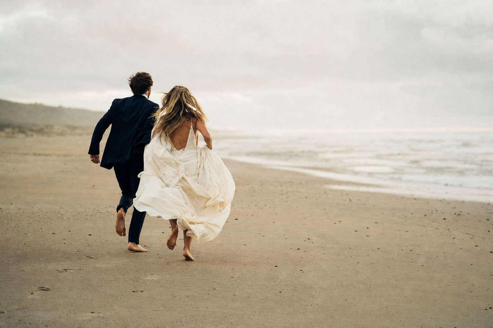
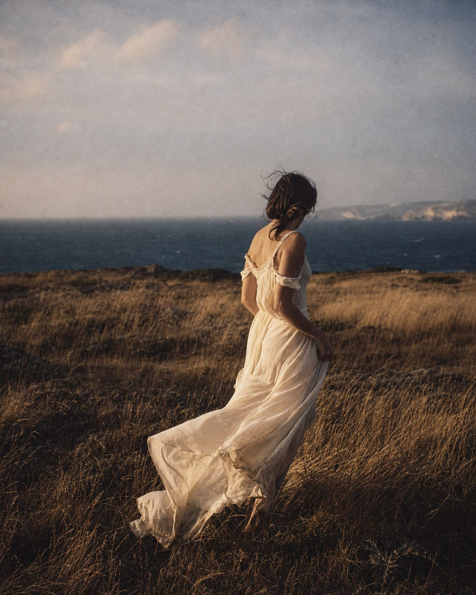

01 Ver história ↗Fotografia documental · Lisboa
O instante antes de partir.
Fotografo o que se sente antes de se explicar — pessoas, afetos e marcas com verdade, presença e um pouco de sal na pele.
Explorar histórias ↓PORTFÓLIO / MMXXVI

Retrato✦Casamentos✦Marcas✦Famílias✦
✦✦✦✦
01 / Manifesto
Não procuro poses perfeitas. Procuro o vento no cabelo, as mãos inquietas, o riso que chega sem avisar.
A minha fotografia nasce da observação e da confiança. Interfiro pouco, sinto muito e guardo aquilo que o tempo, sozinho, levaria.
Inês02 / Histórias escolhidas
Trabalho
recente
Quatro formas de estar perto.
Uma só maneira de olhar.
03 / O que faço
Histórias feitas
à vossa medida.
Cada sessão começa numa conversa. O resto é espaço, tempo e luz para que possam simplesmente estar.
Narrativas completas e honestas, da manhã lenta à pista cheia. Presença discreta, direção apenas quando é precisa e todas as pequenas coisas no meio.
- Cobertura desde 8 horas
- Galeria online privada
- Álbuns fine art opcionais
Para guardar uma fase, celebrar quem são agora ou ter finalmente uma fotografia onde todos cabem — sem poses rígidas nem sorrisos pedidos.
- Sessão até 90 minutos
- Escolha conjunta de localização
- Galeria de alta resolução
Imagens com matéria e intenção para marcas humanas, artistas e projetos independentes. Do conceito à produção, com uma linguagem visual coerente.
- Direção criativa
- Moodboard e shot list
- Licença digital incluída
Fotógrafa, observadora,colecionadora de luz.
04 / Atrás da câmara
Olá, sou
a Inês.
Cresci entre o mar e a serra, numa casa onde as fotografias viviam em caixas e as histórias eram contadas à mesa.
Fotografo profissionalmente desde 2018. Interessa-me a beleza menos óbvia: uma dobra, uma pausa, o modo como alguém procura a mão de outra pessoa. Trabalho em Lisboa e por todo o país — e levo sempre uma câmara analógica na mala.
Conhecer o meu processo ↗08anos a contar
histórias
histórias
140+sessões
entregues
entregues
∞cafés antes
do nascer do sol
do nascer do sol
Palavras bonitas / 01
“A Inês não fotografou apenas o nosso dia. Fotografou aquilo que nós não vimos — e, de alguma forma, aquilo que sentimos.”
05 / Vamos falar
Há uma história
à espera de ser
guardada?
Conta-me o que tens em mente, onde e quando.
Respondo sempre em 48 horas.